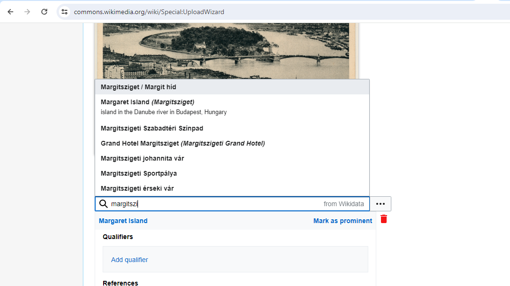

Wikidata
Tutorial: Using Wikidata and Wikimedia Commons for Global Identification
![]()
Global Identities
In this tutorial, I will follow up on the publication of a scanned postcard by Barasits. Mr and Mrs Barasits, a.k.a. János Barasits (1859-1935) and his wife, Barasits, Jánosné, born Pichler, Kornélia, were prominent postcard producers and publishers at the beginning of the 20th century. There are plenty of beautiful postcards available from them.
In the 1920s and 1930s, the authors’ right (~copyright) protection of photographs and postcards was relatively short, only 15 years, so their postcards went into the public domain in terms of copying long ago.
Unfortunately, I did not find their name in the most commonly used authority controls, i.e., neither in VIAF nor ISNI. Writing to VIAF is only possible via member institutions, and ISNI costs money. As a temporary solution, I create a Wikidata QID for János Barakovits until somebody registers his name into VIAF.
Writing in Wikidata is free for all and subject to community review. If you read this tutorial, please pledge to record new persons (or other items) into Wikidata if your knowledge is solid. You can verify the information with research.
After creating a QID for János Barakovics, we uploaded one of their family business’s public domain works onto Wikimedia Commons, then to archive.org and Flickr.
Create a Wikidata Item
In this tutorial you will learn how to create a new entry on Wikidata.
Wikidata is used all over the world to connect and refine knowledge. Do not pollute the system with half-baked ideas, ill-researched items. There are many test and learning environments called sandboxes for practicing. You should only write into Wikidata when you are absolutely certain about your facts.

Add a few, basic statements to your new item, for example, the János Barasits is a human, he was male, born in 1859 (with the precision of a year only) and died in 1935.
Here is a very basic Wikidata page for János Barasits. What is very important that we have a globally unique identifier, Q124423018 that uniquely identifies him as a human. Later, when somebody creates a VIAF or ISNI identifier for him, we can connect this Wikidata page (i.e., Q124423018) to those authority files.
Upload to Wikimedia Commons
You will face a rights notice: you can only upload files where you are the author and give a free cultural license, or you know that that the image is in the public domain.
Give a meaningful identifier (unique part of the future URL of the image.) It is a good idea to use a filename that refers back to your catalogue, in this case, I use:
Now it is time to describe the uploaded item. In this page, I am giving it an English and a Hungarian title, for example, which is the same as it is found in the inventory book and the catalogue:
Now we can add more semantic information about the image. We describe with existing Wikidata entries what is known about this postcard. For example, here I state that it describes Margaret island, the Margaret Island (Q18816) tramstop on the Margaret Bridge; furthermore, I connect the image to the previously created János Barasits (Q124423018) item.

Linking Knowledge
What happened here? We did not simply connect a very basic biography, a scanned vintage postcard and a database entry about a bridge. We linked together in machine-readable (and human readable) form knowledge about a person, his work, and the depicted small island; not only a string, i.e., the name of the island, but
- the name of the island in many languages;
- an encyclopedical description of the island in many languages;
- a geocoded location;
- identifiers in the global library catalog linking system VIAF, the catalogue identifiers of the national libraries of the U.S. and Israel that hold information carriers (most likely, books) about the island.
And of course, we created a simple, graphical user interface where people and machines can start to add and link more knowledge about János Barasits.
Further reading
Bibliography file: wikidata.bib
Wikidata: From “an” Identifier to “the” Identifier: using Wikidata QID as global URI for identifying things (Veen 2019) .
Beyond VIAF: Wikidata as a Complementary Tool for Authority Control in Libraries: use of Wikidata for librarians - (Bianchini, Bargioni, and Pellizzari di San Girolamo 2021)
Beyond the Fountain: Mapping a New Entry Point to the Society of Independent Artists: use of Wikidata for private collections and communities (Siler 2022)
Bulgarian Icons in Wikidata and EDM: Reconciliation between Wikidata and the Europeana Data Model (Alexiev et al. 2020)
Wikidata: a new perspective towards universal bibliographic control (Sardo and Bianchini 2022).
Wikidata and Wikibase as complementary research data management services for cultural heritage data: use in cultural heritage (Rossenova, Duchesne, and Blümel 2022)
Wikidata for authority control: sharing museum knowledge with the world: the use of Wikidata in museums. (Fagerving 2023)
Providing sustainable data services through Wikibase and Wikidata: use cases from Europe (2020 2020)
Environmental impact assessment reports in Wikidata and a Wikibase (Nielsen et al. 2023)
References
2020, SEMIC. 2020. ‘Providing Sustainable Data Services Through Wikibase and Wikidata’. https://joinup.ec.europa.eu/sites/default/files/custom-page/attachment/2020-11/Parallel-track-4_B-Fischer_J-Thill_A-Angjeli%20final%20ppt.pdf.
Alexiev, Vladimir, Plamen Tarkalanov, Nikola Georgiev, and Lilia Pavlova. 2020. ‘Bulgarian Icons in Wikidata and EDM’. Digital Presentation and Preservation of Cultural and Scientific Heritage 10: 45–63. https://doi.org/10.55630/dipp.2020.10.2.
Bianchini, Carlo, Stefano Bargioni, and Camillo Carlo Pellizzari di San Girolamo. 2021. ‘Beyond VIAF Wikidata as a Complementary Tool for Authority Control in Libraries’. Information Technology and Libraries 40 (2). https://doi.org/10.6017/ital.v40i2.12959.
Fagerving, Alicia. 2023. ‘Wikidata for Authority Control: Sharing Museum Knowledge with the World’. Digital Humanities in the Nordic and Baltic Countries Publications 5 (1): 222–39. https://doi.org/10.5617/dhnbpub.10665.
Nielsen, Finn Årup, Ivar Lyhne, Darío Garigliotti, Annika Butzbach, Emilia Ravn Boess, Katja Hose, and Lone Kørnøv. 2023. ‘Environmental Impact Assessment Reports in Wikidata and a Wikibase: Semantic Technologies for Scientific, Technical and Legal Data 2023’. Proceedings of the Semantic Technologies for Scientific, Technical and Legal Data 2023, CEUR workshop proceedings, 3443.
Rossenova, Lozana, Paul Duchesne, and Ina Blümel. 2022. ‘Wikidata and Wikibase as Complementary Research Data Management Services for Cultural Heritage Data’. In CEUR Workshop Proceedings. https://serwiss.bib.hs-hannover.de/frontdoor/deliver/index/docId/2573/file/rossenova_etal2022-wikidata_research_data_mgmt.pdf.
Sardo, Lucia, and Carlo Bianchini. 2022. ‘Wikidata: A New Perspective Towards Universal Bibliographic Control’. JLIS.it : Italian Journal of Library and Information Science 13 (1): 291–311. https://doi.org/10.4403/jlis.it-12725.
Siler, M. 2022. ‘Beyond the Fountain: Mapping a New Entry Point to the Society of Independent Artists’. Art Documentation 41 (2): 219–41. https://doi.org/10.1086/722172.
Veen, Theo van. 2019. ‘Wikidata: From “an” Identifier to “the” Identifier’. Information Technology and Libraries 38 (2): 72–81. https://doi.org/10.6017/ital.v38i2.10886.